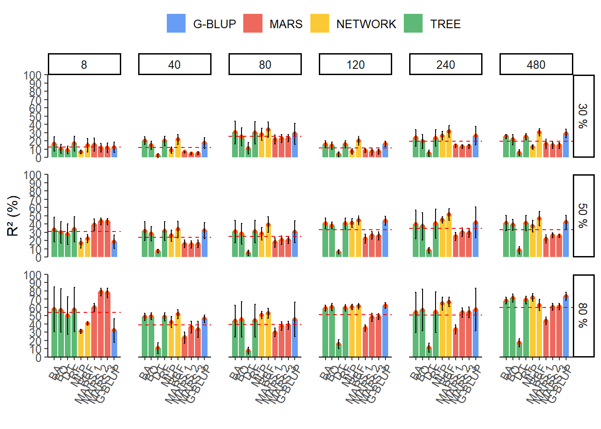
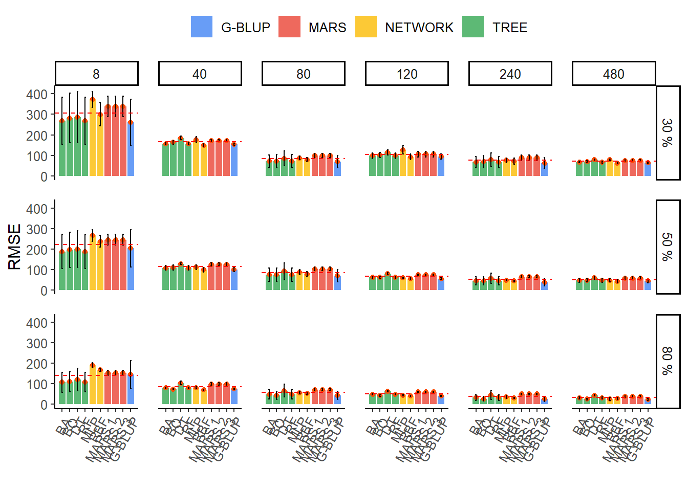

Last updated: 2025-03-25
Checks: 6 1
Knit directory:
Genomic-prediction-through-machine-learning-and-neural-networks-for-traits-with-epistasis/
This reproducible R Markdown analysis was created with workflowr (version 1.7.1). The Checks tab describes the reproducibility checks that were applied when the results were created. The Past versions tab lists the development history.
The R Markdown file has unstaged changes. To know which version of
the R Markdown file created these results, you’ll want to first commit
it to the Git repo. If you’re still working on the analysis, you can
ignore this warning. When you’re finished, you can run
wflow_publish to commit the R Markdown file and build the
HTML.
Great job! The global environment was empty. Objects defined in the global environment can affect the analysis in your R Markdown file in unknown ways. For reproduciblity it’s best to always run the code in an empty environment.
The command set.seed(20220720) was run prior to running
the code in the R Markdown file. Setting a seed ensures that any results
that rely on randomness, e.g. subsampling or permutations, are
reproducible.
Great job! Recording the operating system, R version, and package versions is critical for reproducibility.
Nice! There were no cached chunks for this analysis, so you can be confident that you successfully produced the results during this run.
Great job! Using relative paths to the files within your workflowr project makes it easier to run your code on other machines.
Great! You are using Git for version control. Tracking code development and connecting the code version to the results is critical for reproducibility.
The results in this page were generated with repository version e71ae00. See the Past versions tab to see a history of the changes made to the R Markdown and HTML files.
Note that you need to be careful to ensure that all relevant files for
the analysis have been committed to Git prior to generating the results
(you can use wflow_publish or
wflow_git_commit). workflowr only checks the R Markdown
file, but you know if there are other scripts or data files that it
depends on. Below is the status of the Git repository when the results
were generated:
Ignored files:
Ignored: .Rproj.user/
Unstaged changes:
Modified: analysis/Genomic-prediction.Rmd
Note that any generated files, e.g. HTML, png, CSS, etc., are not included in this status report because it is ok for generated content to have uncommitted changes.
These are the previous versions of the repository in which changes were
made to the R Markdown (analysis/Genomic-prediction.Rmd)
and HTML (docs/Genomic-prediction.html) files. If you’ve
configured a remote Git repository (see ?wflow_git_remote),
click on the hyperlinks in the table below to view the files as they
were in that past version.
| File | Version | Author | Date | Message |
|---|---|---|---|---|
| Rmd | 16b1db0 | WevertonGomesCosta | 2025-03-24 | add setup knitr::opts_chunk$set(echo = T, warning = F) |
| Rmd | 3db9750 | WevertonGomesCosta | 2025-03-24 | update genomic-prediction.rmd |
| Rmd | 48e59c9 | WevertonGomesCosta | 2025-03-24 | add file Genomic-prediction |
filesFenT <-
list.files(path = pathFenT,
pattern = "/*.txt",
full.names = T)
filesFenV <-
list.files(path = pathFenV,
pattern = "/*.txt",
full.names = T)
filesGenT <-
list.files(path = pathGenT,
pattern = "/*.txt",
full.names = T)
filesGenV <-
list.files(path = pathGenV,
pattern = "/*.txt",
full.names = T)Carregando pacotes exigidos: FormulaCarregando pacotes exigidos: plotmoCarregando pacotes exigidos: plotrixCarregando pacotes exigidos: ggplot2Carregando pacotes exigidos: lattice
Anexando pacote: 'vip'O seguinte objeto é mascarado por 'package:utils':
vi── Attaching core tidyverse packages ──────────────────────── tidyverse 2.0.0 ──
✔ dplyr 1.1.4 ✔ readr 2.1.5
✔ forcats 1.0.0 ✔ stringr 1.5.1
✔ lubridate 1.9.4 ✔ tibble 3.2.1
✔ purrr 1.0.4 ✔ tidyr 1.3.1── Conflicts ────────────────────────────────────────── tidyverse_conflicts() ──
✖ dplyr::filter() masks stats::filter()
✖ dplyr::lag() masks stats::lag()
✖ purrr::lift() masks caret::lift()
ℹ Use the conflicted package (<http://conflicted.r-lib.org/>) to force all conflicts to become errorsfor(g in 1:grau) {
cat("Grau: ", g, "\n")
for (j in 1:nvariavel) {
cat("Variavel: ", j, "\n")
R2t <- matrix(nrow = nfolds, ncol = 1) #Objeto r? treinamento
R2v <- matrix(nrow = nfolds, ncol = 1) #Objeto r? valida??o
reqt <- matrix(nrow = nfolds, ncol = 1)#Objeto RQEM treinamento
reqv <- matrix(nrow = nfolds, ncol = 1)#Objeto RQEM valida??o
for (i in 1:nfolds) {
dadosTy <- read.table(filesFenT[i])
dadosTx <- read.table(filesGenT[i])
dadosVy <- read.table(filesFenV[i])
dadosVx <- read.table(filesGenV[i])
cat("K-fold = ", i, "\n")
for (k in c(threshi , seq(passot , threshf , by = passot))) {
mars3 <-
earth(
x = dadosTx,
y = dadosTy[, j],
degree = g,
thresh = k
)
## Predi??o do modelo
ypred <- predict(mars3, dadosVx)
if (sd(ypred) == 0) {
next
}
##Par?metros do Modelo
rv <- cor(ypred, dadosVy[, j])
R2vk <- rv * rv
if (k == threshi) {
cat("Resultado para Variavel: ",
j,
" Grau: ",
g,
"Mudan?a em R?: ",
k,
"\n")
R2v[i] <- R2vk
best.mars <- mars3
k1 <- k
n1 <- n
}
if (R2vk > R2v[i]) {
cat("Resultado para Variavel: ",
j,
" Grau: ",
g,
"Mudan?a em R?: ",
k,
"\n")
R2v[i] <- R2vk
best.mars <- mars3
k1 <- k
}
}
cat("Resultado para Variavel: ",
j,
" Grau: ",
g,
"Mudan?a em R?: ",
k1,
"\n")
## Par?metros do modelo Treinamento
rt <- cor(best.mars$fitted.values, dadosTy[, j])
R2t[i] <- rt * rt
errot <- best.mars$fitted.values - dadosTy[, j]
reqt[i] <- sqrt(mean(errot ^ 2))
## Par?metros do modelo Valida??o
errov <- dadosVy[, j] - ypred
reqv[i] <- sqrt(mean(errov ^ 2))
coefc <- list(best.mars$coefficients)
## Import?ncia de marcadores
imp <- evimp(best.mars, trim = FALSE)
imp <- as.data.frame(unclass(imp[, c(1, 6)]))
names <- cbind(imp$col, i)
imp <- data.frame(imp$rss, names)
colnames(imp) <- c("Overall", "marker", "n.fold")
if (i == 1) {
imp.mars3 <- imp
} else {
imp.mars3 <- imp.mars3 %>% rbind(imp)
}
}
cat("Par?metros do modelo da variavel ", j, "\n")
par.mars3 <- cbind(R2t, R2v, reqt, reqv)
par.mars3 <-
rbind(par.mars3,
apply(par.mars3, 2, mean),
apply(par.mars3, 2, sd))
colnames(par.mars3) <-
c("R².Trein", "R².Val", "REQM.Trein", "REQM.Val")
rownames(par.mars3) <-
c("K-Fold 1",
"K-Fold 2",
"K-Fold 3",
"K-Fold 4",
"K-Fold 5",
"Mean",
"SD")
if (g == 1) {
names <- cbind(rownames(par.mars3), "MARS L", j)
namesi <- cbind("MARS L", rep(j, len = nrow(imp.mars3)))
}
if (g == 2) {
names <- cbind(rownames(par.mars3), "MARS Q", j)
namesi <- cbind("MARS Q", rep(j, len = nrow(imp.mars3)))
}
if (g == 3) {
names <- cbind(rownames(par.mars3), "MARS C", j)
namesi <- cbind("MARS C", rep(j, len = nrow(imp.mars3)))
}
colnames(names) <- c("n.fold", "method", "variable")
par.mars3 <- data.frame(par.mars3, names)
par.mars3
colnames(namesi) <- c("method", "variable")
imp.mars3 <- data.frame(imp.mars3, namesi)
#Resultado de todas variaveis
if (j == 1) {
res.mars3 <- par.mars3
res.imp.mars3 <- imp.mars3
} else {
res.mars3 <- res.mars3 %>% rbind(par.mars3)
res.imp.mars3 <- res.imp.mars3 %>% rbind(imp.mars3)
}
}
cat("Resultado final de todas variav?is para MARS", g, "\n")
write.csv(res.mars3, paste("res.mars", g, ".csv", sep = ""), row.names = FALSE)
cat("Import?ncia de marcadores para todas variav?is do MARS", g, "\n")
arq <- paste("res.imp.mars", g, ".RData", sep = "")
save(res.imp.mars3, file = arq)
}for(j in 1:nvariable) {
cat("==================================================== =======",
"\n")
cat("Results for for variable ", j, "\n")
cat("==================================================== =======",
"\n")
R2t <- matrix(nrow = nfolds, ncol = 1) #Object r² training
R2v <- matrix(nrow = nfolds, ncol = 1) #Object r² validation
reqt <- matrix(nrow = nfolds, ncol = 1)# Training RQEM object
reqv <- matrix(nrow = nfolds, ncol = 1)#RQEM validation object
for (i in 1:nfolds) {
dataTy <- read.table(filesFenT[i])
dataTx <- read.table(filesGenT[i])
dataVy <- read.table(filesFenV[i])
dataVx <- read.table(filesGenV[i])
# Fit a basic Decision Tree - Training
cat("K-fold = ", i, "\n")
fit_tree <- rpart(dataTy[, j] ~ . , data = dataTx)
## Model parameters
rs = cor(dataTy[, j], predict(fit_tree))
R2t[i] = rs * rs
errort = predict(fit_tree) - dataTy[, j]
reqt[i] = sqrt(mean(errort ^ 2))
## Importance of bookmarks
imp <-
data.frame(varImp(fit_tree, scale = TRUE, value = "rss"))
names <- cbind(rownames(imp), i)
colnames(names) <- c("marker", "n.fold")
imp <- data.frame(imp, names)
if (i == 1) {
imp.ad <- imp
} else {
imp.ad <- imp.ad %>% rbind(imp)
}
# Validation
## Model prediction
outputV = predict(fit_tree, newdata = dataVx)
## Model parameters
rs = cor(dataVy[, j], outputV)
R2v[i] = rs * rs
errorv = dataVy[, j] - outputV
reqv[i] = sqrt(mean(errorv ^ 2))
}
cat("Variable model parameters", j, "\n")
par.ad <- cbind(R2t, R2v, reqt, reqv)
par.ad <- rbind(par.ad, apply(par.ad, 2, mean), apply(par.ad, 2, sd))
colnames(par.ad) <-
c("R².Trein", "R².Val", "REQM.Trein", "REQM.Val")
rownames(par.ad) <-
c("K-Fold 1",
"K-Fold 2",
"K-Fold 3",
"K-Fold 4",
"K-Fold 5",
"Mean",
"SD")
names <- cbind(rownames(par.ad), "DT", j)
colnames(names) <- c("n.fold", "method", "variable")
par.ad <- data.frame(par.ad, names)
par.ad
# Result of all variables
if (j == 1) {
res.ad <- par.ad
} else {
res.ad <- res.ad %>% rbind(par.ad)
}
#Importance of all variable markers
names <- cbind("DT", rep(j, len = nrow(imp.ad)))
colnames(names) <- c("method", "variable")
imp.ad <- data.frame(imp.ad, names)
if (j == 1) {
res.imp.ad <- imp.ad
} else {
res.imp.ad <- res.imp.ad %>% rbind(imp.ad)
}
}
#cat("Final result of all variables for Decision Tree", "\n")
#res.ad
write.csv(res.ad, "output/res.ad.csv", row.names = FALSE)
#cat("Importance of markers for all decision tree variables", "\n")
#res.imp.ad
write.csv(res.imp.ad, "output/res.imp.ad.csv", row.names = FALSE)randomForest 4.7-1.2Type rfNews() to see new features/changes/bug fixes.
Anexando pacote: 'randomForest'O seguinte objeto é mascarado por 'package:dplyr':
combineO seguinte objeto é mascarado por 'package:ggplot2':
marginfor(j in 1:nvariable) {
cat("==================================================== =======",
"\n")
cat("Results for for variable ", j, "\n")
cat("==================================================== =======",
"\n")
R2t <- matrix(nrow = nfolds, ncol = 1) #Object r² training
R2v <- matrix(nrow = nfolds, ncol = 1) #Object r² validation
reqt <- matrix(nrow = nfolds, ncol = 1)# Training RQEM object
reqv <- matrix(nrow = nfolds, ncol = 1)#RQEM validation object
for (i in 1:nfolds) {
dataTy <- read.table(filesFenT[i])
dataTx <- read.table(filesGenT[i])
dataVy <- read.table(filesFenV[i])
dataVx <- read.table(filesGenV[i])
# Fit a basic Bagging - Training
cat("K-fold = ", i, "\n")
bag <-
randomForest(dataTy[, j] ~ . , data = dataTx, mtry = ncol(dataTx))
## Model parameters
rs = cor(dataTy[, j], predict(bag))
R2t[i] = rs * rs
errort = predict(bag) - dataTy[, j]
reqt[i] = sqrt(mean(errort ^ 2))
## Importance of bookmarks
imp <- data.frame(varImp(bag, scale = TRUE, value = "rss"))
names <- cbind(rownames(imp), i)
colnames(names) <- c("marker", "n.fold")
imp <- data.frame(imp, names)
if (i == 1) {
imp.bag <- imp
} else {
imp.bag <- imp.bag %>% rbind(imp)
}
# Validation
## Model prediction
outputV = predict(bag, newdata = dataVx)
## Model parameters
rs = cor(dataVy[, j], outputV)
R2v[i] = rs * rs
errorv = dataVy[, j] - outputV
reqv[i] = sqrt(mean(errorv ^ 2))
}
cat("Variable model parameters", j, "\n")
par.bag <- cbind(R2t, R2v, reqt, reqv)
par.bag <-
rbind(par.bag, apply(par.bag, 2, mean), apply(par.bag, 2, sd))
colnames(par.bag) <-
c("R².Trein", "R².Val", "REQM.Trein", "REQM.Val")
rownames(par.bag) <-
c("K-Fold 1",
"K-Fold 2",
"K-Fold 3",
"K-Fold 4",
"K-Fold 5",
"Mean",
"SD")
names <- cbind(rownames(par.bag), "BA", j)
colnames(names) <- c("n.fold", "method", "variable")
par.bag <- data.frame(par.bag, names)
par.bag
# Result of all variables
if (j == 1) {
res.bag <- par.bag
} else {
res.bag <- res.bag %>% rbind(par.bag)
}
#Importance of all variable markers
names <- cbind("BA", rep(j, len = nrow(imp.bag)))
colnames(names) <- c("method", "variable")
imp.bag <- data.frame(imp.bag, names)
if (j == 1) {
res.imp.bag <- imp.bag
} else {
res.imp.bag <- res.imp.bag %>% rbind(imp.bag)
}
}
#cat("Final result of all variables for Bagging", "\n")
#res.bag
write.csv(res.bag, "output/res.bag.csv", row.names = FALSE)
#cat("Importance of markers for all Bagging variables", "\n")
#res.imp.bag
write.csv(res.imp.bag, "output/res.imp.bag.csv", row.names = FALSE)for(j in 1:nvariable) {
cat("==================================================== =======",
"\n")
cat("Results for for variable ", j, "\n")
cat("==================================================== =======",
"\n")
R2t <- matrix(nrow = nfolds, ncol = 1) #Object r² training
R2v <- matrix(nrow = nfolds, ncol = 1) #Object r² validation
reqt <- matrix(nrow = nfolds, ncol = 1)# Training RQEM object
reqv <- matrix(nrow = nfolds, ncol = 1)#RQEM validation object
for (i in 1:nfolds) {
dataTy <- read.table(filesFenT[i])
dataTx <- read.table(filesGenT[i])
dataVy <- read.table(filesFenV[i])
dataVx <- read.table(filesGenV[i])
# Fit a basic Random Forest - Training
cat("K-fold = ", i, "\n")
rf <-
randomForest(
dataTy[, j] ~ . ,
mytry = (ncol(dataTx) / 3),
data = dataTx,
ntree = 500
)
## Model parameters
rs = cor(dataTy[, j], predict(rf))
R2t[i] = rs * rs
errort = predict(rf) - dataTy[, j]
reqt[i] = sqrt(mean(errort ^ 2))
## Importance of bookmarks
imp <- data.frame(varImp(rf, scale = TRUE, value = "rss"))
names <- cbind(rownames(imp), i)
colnames(names) <- c("marker", "n.fold")
imp <- data.frame(imp, names)
if (i == 1) {
imp.rf <- imp
} else {
imp.rf <- imp.rf %>% rbind(imp)
}
# Validation
## Model prediction
outputV = predict(rf, newdata = dataVx)
## Model parameters
rs = cor(dataVy[, j], outputV)
R2v[i] = rs * rs
errorv = dataVy[, j] - outputV
reqv[i] = sqrt(mean(errorv ^ 2))
}
cat("Variable model parameters", j, "\n")
par.rf <- cbind(R2t, R2v, reqt, reqv)
par.rf <- rbind(par.rf, apply(par.rf, 2, mean), apply(par.rf, 2, sd))
colnames(par.rf) <-
c("R².Trein", "R².Val", "REQM.Trein", "REQM.Val")
rownames(par.rf) <-
c("K-Fold 1",
"K-Fold 2",
"K-Fold 3",
"K-Fold 4",
"K-Fold 5",
"Mean",
"SD")
names <- cbind(rownames(par.rf), "RF", j)
colnames(names) <- c("n.fold", "method", "variable")
par.rf <- data.frame(par.rf, names)
par.rf
# Result of all variables
if (j == 1) {
res.rf <- par.rf
} else {
res.rf <- res.rf %>% rbind(par.rf)
}
#Importance of all variable markers
names <- cbind("RF", rep(j, len = nrow(imp.rf)))
colnames(names) <- c("method", "variable")
imp.rf <- data.frame(imp.rf, names)
if (j == 1) {
res.imp.rf <- imp.rf
} else {
res.imp.rf <- res.imp.rf %>% rbind(imp.rf)
}
}
#cat("Final result of all variables for Random Forest", "\n")
#res.rf
write.csv(res.rf, "output/res.rf.csv", row.names = FALSE)
#cat("Importance of markers for all variables in Random Forest", "\n")
#res.imp.rf
write.csv(res.imp.rf, "output/res.imp.rf.csv", row.names = FALSE)Loaded gbm 2.2.2This version of gbm is no longer under development. Consider transitioning to gbm3, https://github.com/gbm-developers/gbm3for(j in 1:nvariable) {
cat("==================================================== =======",
"\n")
cat("Results for for variable ", j, "\n")
cat("==================================================== =======",
"\n")
R2t <- matrix(nrow = nfolds, ncol = 1) #Object r² training
R2v <- matrix(nrow = nfolds, ncol = 1) #Object r² validation
reqt <- matrix(nrow = nfolds, ncol = 1)# Training RQEM object
reqv <- matrix(nrow = nfolds, ncol = 1)#RQEM validation object
for (i in 1:nfolds) {
dataTy <- read.table(filesFenT[i])
dataTx <- read.table(filesGenT[i])
dataVy <- read.table(filesFenV[i])
dataVx <- read.table(filesGenV[i])
# Fit a basic Boosting - Training
cat("K-fold = ", i, "\n")
boost = gbm(
dataTy[, j] ~ . ,
data = dataTx,
distribution = "gaussian",
n.trees = 500 ,
interaction.depth = 2
)
## Model parameters
output1 = predict(boost, dataTx, n.trees = 500)
rs = cor(dataTy[, j], output1)
R2t[i] = rs * rs
errort = output1 - dataVy[, j]
reqt[i] = sqrt(mean(errort ^ 2))
## Importance of bookmarks
imp <-
data.frame(varImp(
boost,
scale = TRUE,
numTrees = 500,
value = "rss"
))
names <- cbind(rownames(imp), i)
colnames(names) <- c("marker", "n.fold")
imp <- data.frame(imp, names)
if (i == 1) {
imp.boost <- imp
} else {
imp.boost <- imp.boost %>% rbind(imp)
}
# Validation
## Model prediction
outputV = predict(boost, newdata = dataVx, n.trees = 500)
## Model parameters
rs = cor(dataVy[, j], outputV)
R2v[i] = rs * rs
errorv = outputV - dataVy[, j]
reqv[i] = sqrt(mean(errorv ^ 2))
}
cat("Variable model parameters", j, "\n")
par.boost <- cbind(R2t, R2v, reqt, reqv)
par.boost <-
rbind(par.boost, apply(par.boost, 2, mean), apply(par.boost, 2, sd))
colnames(par.boost) <-
c("R².Trein", "R².Val", "REQM.Trein", "REQM.Val")
rownames(par.boost) <-
c("K-Fold 1",
"K-Fold 2",
"K-Fold 3",
"K-Fold 4",
"K-Fold 5",
"Mean",
"SD")
names <- cbind(rownames(par.boost), "BO", j)
colnames(names) <- c("n.fold", "method", "variable")
par.boost <- data.frame(par.boost, names)
par.boost
# Result of all variables
if (j == 1) {
res.boost <- par.boost
} else {
res.boost <- res.boost %>% rbind(par.boost)
}
#Importance of all variable markers
names <- cbind("BO", rep(j, len = nrow(imp.boost)))
colnames(names) <- c("method", "variable")
imp.boost <- data.frame(imp.boost, names)
if (j == 1) {
res.imp.boost <- imp.boost
} else {
res.imp.boost <- res.imp.boost %>% rbind(imp.boost)
}
}
#cat("Final result of all variables for MARS Linear", "\n")
#res.boost
write.csv(res.boost,"output/res.boost.csv", row.names = FALSE)
#cat("Importance of markers for all MARS Linear variables", "\n")
write.csv(res.imp.boost,"output/res.imp.boost.csv", row.names = FALSE)
Anexando pacote: 'MASS'O seguinte objeto é mascarado por 'package:dplyr':
selectfor(j in 1:nvariable) {
cat("==================================================== =======",
"\n")
cat("Results for for variable ", j, "\n")
cat("==================================================== =======",
"\n")
R2t <- matrix(nrow = nfolds, ncol = 1) #Object r² training
R2v <- matrix(nrow = nfolds, ncol = 1) #Object r² validation
reqt <- matrix(nrow = nfolds, ncol = 1)# Training RQEM object
reqv <- matrix(nrow = nfolds, ncol = 1)#RQEM validation object
for (i in 1:nfolds) {
dataTy <- read.table(filesFenT[i])
dataTx <- read.table(filesGenT[i])
dataVy <- read.table(filesFenV[i])
dataVx <- read.table(filesGenV[i])
# Fit a G-LUP model - Training
cat("K-fold = ", i, "\n")
gblup = kinship.BLUP(dataTy[, j], G.train = dataTx)
## Model parameters
rs = cor(dataTy[, j], gblup$g.train)
R2t[i] = rs * rs
errort <- dataTy[, j] - gblup$g.train
errort = errort - mean(errort)
reqt[i] <- sqrt(mean(errort ^ 2))
## Importance of bookmarks
# structuring genomic values in array to use sort
gbv = as.matrix(gblup$g.train)
# Marker effect vector
dataTx = as.matrix(dataTx)
effect.markers = ginv(t(dataTx) %*% dataTx) %*% (t(dataTx) %*% gbv)
imp = as.data.frame(effect.markers)
colnames(imp) <- "Overall"
names <- cbind(colnames(dataTx), i)
colnames(names) <- c("marker", "n.fold")
imp <- data.frame(imp, names)
if (i == 1) {
imp.gblup <- imp
} else {
imp.gblup <- imp.gblup %>% rbind(imp)
}
# Validation
## Model prediction
dataVx = as.matrix(dataVx)
outputV = dataVx %*% effect.markers
## Model parameters
rs = cor(dataVy[, j], outputV)
R2v[i] = rs * rs
errorv <- dataVy[, j] - outputV
errorv = errorv - mean(errorv)
reqv[i] <- sqrt(mean(errorv ^ 2))
}
cat("Variable model parameters", j, "\n")
par.gblup <- cbind(R2t, R2v, reqt, reqv)
par.gblup <-
rbind(par.gblup, apply(par.gblup, 2, mean), apply(par.gblup, 2, sd))
colnames(par.gblup) <-
c("R².Trein", "R².Val", "REQM.Trein", "REQM.Val")
rownames(par.gblup) <-
c("K-Fold 1",
"K-Fold 2",
"K-Fold 3",
"K-Fold 4",
"K-Fold 5",
"Mean",
"SD")
names <- cbind(rownames(par.gblup), "G-BLUP", j)
colnames(names) <- c("n.fold", "method", "variable")
par.gblup <- data.frame(par.gblup, names)
par.gblup
# Result of all variables
if (j == 1) {
res.gblup <- par.gblup
} else {
res.gblup <- res.gblup %>% rbind(par.gblup)
}
#Importance of all variable markers
names <- cbind("G-BLUP", rep(j, len = nrow(imp.gblup)))
colnames(names) <- c("method", "variable")
imp.gblup <- data.frame(imp.gblup, names)
if (j == 1) {
res.imp.gblup <- imp.gblup
} else {
res.imp.gblup <- res.imp.gblup %>% rbind(imp.gblup)
}
}
#cat("Final result of all variables for G-BLUP", "\n")
write.csv(res.gblup,"output/res.gblup.csv", row.names = FALSE)
#
#cat("Importance of markers for all G_BLUP variables", "\n")
#res.imp.gblup
write.csv(res.imp.gblup,"output/res.imp.gblup.csv", row.names = FALSE)result <-
rbind(res.mars1,
res.mars2,
res.mars3,
res.ad,
res.bag,
res.rf,
res.boost,
res.gblup,
res.rbf,
res.mlp)
colnames(result) <-
c("R².Trein",
"R².Val",
"REQM.Trein",
"REQM.Val",
"n.fold",
"method",
"variable")
result <- result %>%
mutate(
variable = as.numeric(variable),
method = as.factor(method),
method = fct_relevel(method, c("BA", "BO", "DT", "G-BLUP", "MARS L", "MARS Q", "MARS C", "MLP", "RBF", "RF")),
method = fct_recode(method, "MARS 1" = "MARS L", "MARS 2" = "MARS Q", "MARS 3" = "MARS C"),
n.fold = as.factor(str_replace(n.fold, c("-", " "), "")),
herd = as.factor(
case_when(
variable <= 6 ~ "30 %",
variable > 6 & variable < 13 ~ "50 %",
variable >= 13 ~ "80 %"
)
),
ngenes = as.factor(
case_when(
variable == 1 | variable == 7 | variable == 13 ~ 8,
variable == 2 | variable == 8 | variable == 14 ~ 40,
variable == 3 | variable == 9 | variable == 15 ~ 80,
variable == 4 | variable == 10 | variable == 16 ~ 120,
variable == 5 | variable == 11 | variable == 17 ~ 240,
variable == 6 | variable == 12 | variable == 18 ~ 480
)
)
)
result_final <- result %>%
group_by(ngenes, herd, method) %>%
filter(n.fold != "Mean" & n.fold != "SD") %>%
summarise(
R2.mean = mean(`R².Val`) * 100,
REQM.mean = mean(REQM.Val) * 100,
R2.sd = sd(`R².Val`) * 100,
REQM.sd = sd(REQM.Val) * 100
) %>%
ungroup()
result_final <- result_final %>%
mutate(family = factor(
case_when(
method == "MARS 1" |
method == "MARS 2" | method == "MARS 3" ~ "MARS",
method == "DT" |
method == "RF" | method == "BA" | method == "BO" ~ "TREE",
method == "G-BLUP" ~ "G-BLUP",
method == "RBF" | method == "MLP" ~ "NETWORK"
)))
write.csv(result_final,"output/result.final.csv", row.names = FALSE)library(ggthemes)
h_line <- result_final %>%
group_by(ngenes, herd) %>%
summarise(mediar2 = mean(R2.mean),
mediareqm = mean(REQM.mean))`summarise()` has grouped output by 'ngenes'. You can override using the
`.groups` argument.result_final %>%
mutate(varnames = fct_reorder2(method, R2.mean, family)) %>%
ggplot(aes(x = varnames, y = R2.mean, fill = family)) +
geom_col(alpha = 0.8, width = 0.85) +
geom_point(colour = "#FC4E07",show.legend = FALSE) +
geom_errorbar(
aes(ymin = R2.mean - R2.sd, ymax = R2.mean + R2.sd),
width = .2,
position = position_dodge(.9)
) +
scale_x_discrete(expand = expansion(add = 1)) +
scale_y_continuous(
limits = c(0, 100),
expand = c(0, 0),
breaks = scales::breaks_width(10)
) +
geom_hline(
data = h_line,
aes(yintercept = mediar2),
linetype = "dashed",
colour = "red"
) +
facet_grid(herd ~ ngenes) +
theme_classic() +
theme(
axis.text.x = element_text(angle = 60, hjust = 1),
text = element_text(size = 12),
panel.spacing = unit(1, "lines"),
legend.position = "top"
) +
labs(y = "R² (%)", x = "", fill = "") +
scale_fill_gdocs()
result_final %>%
mutate(varnames = fct_reorder2(method, REQM.mean, family)) %>%
ggplot(aes(x = varnames, y = REQM.mean, fill = family)) +
geom_col(alpha = 0.8, width = 0.85) +
geom_point(colour = "#FC4E07",show.legend = FALSE) +
geom_errorbar(
aes(ymin = REQM.mean - REQM.sd, ymax = REQM.mean + REQM.sd),
width = .2,
position = position_dodge(.9)
) +
scale_x_discrete(expand = expansion(add = 1)) +
geom_hline(
data = h_line,
aes(yintercept = mediareqm),
linetype = "dashed",
colour = "red"
) +
facet_grid(herd ~ ngenes, scales = "free") +
theme_classic() +
theme(
axis.text.x = element_text(angle = 60, hjust = 1),
text = element_text(size = 12),
panel.spacing = unit(1, "lines"),
legend.position = "top"
) +
labs(y = "RMSE", x = "", fill = "") +
scale_fill_gdocs() +
ylim(0,420)
R version 4.4.3 (2025-02-28 ucrt)
Platform: x86_64-w64-mingw32/x64
Running under: Windows 11 x64 (build 26100)
Matrix products: default
locale:
[1] LC_COLLATE=Portuguese_Brazil.utf8 LC_CTYPE=Portuguese_Brazil.utf8
[3] LC_MONETARY=Portuguese_Brazil.utf8 LC_NUMERIC=C
[5] LC_TIME=Portuguese_Brazil.utf8
time zone: America/Sao_Paulo
tzcode source: internal
attached base packages:
[1] stats graphics grDevices utils datasets methods base
other attached packages:
[1] ggthemes_5.1.0 MASS_7.3-64 rrBLUP_4.6.3
[4] gbm_2.2.2 randomForest_4.7-1.2 ISLR_1.4
[7] rpart_4.1.24 lubridate_1.9.4 forcats_1.0.0
[10] stringr_1.5.1 dplyr_1.1.4 purrr_1.0.4
[13] readr_2.1.5 tidyr_1.3.1 tibble_3.2.1
[16] tidyverse_2.0.0 vip_0.4.1 caret_7.0-1
[19] lattice_0.22-6 ggplot2_3.5.1 earth_5.3.4
[22] plotmo_3.6.4 plotrix_3.8-4 Formula_1.2-5
[25] workflowr_1.7.1
loaded via a namespace (and not attached):
[1] pROC_1.18.5 rlang_1.1.5 magrittr_2.0.3
[4] git2r_0.35.0 compiler_4.4.3 getPass_0.2-4
[7] callr_3.7.6 vctrs_0.6.5 reshape2_1.4.4
[10] pkgconfig_2.0.3 fastmap_1.2.0 labeling_0.4.3
[13] promises_1.3.2 rmarkdown_2.29 prodlim_2024.06.25
[16] tzdb_0.4.0 ps_1.9.0 xfun_0.51
[19] cachem_1.1.0 jsonlite_1.9.1 recipes_1.1.1
[22] later_1.4.1 parallel_4.4.3 R6_2.6.1
[25] bslib_0.9.0 stringi_1.8.4 parallelly_1.42.0
[28] jquerylib_0.1.4 Rcpp_1.0.14 iterators_1.0.14
[31] knitr_1.49 future.apply_1.11.3 httpuv_1.6.15
[34] Matrix_1.7-2 splines_4.4.3 nnet_7.3-20
[37] timechange_0.3.0 tidyselect_1.2.1 rstudioapi_0.17.1
[40] yaml_2.3.10 timeDate_4041.110 codetools_0.2-20
[43] processx_3.8.6 listenv_0.9.1 plyr_1.8.9
[46] withr_3.0.2 evaluate_1.0.3 future_1.34.0
[49] survival_3.8-3 pillar_1.10.1 whisker_0.4.1
[52] foreach_1.5.2 stats4_4.4.3 generics_0.1.3
[55] rprojroot_2.0.4 hms_1.1.3 munsell_0.5.1
[58] scales_1.3.0 globals_0.16.3 class_7.3-23
[61] glue_1.8.0 tools_4.4.3 data.table_1.17.0
[64] ModelMetrics_1.2.2.2 gower_1.0.2 fs_1.6.5
[67] grid_4.4.3 ipred_0.9-15 colorspace_2.1-1
[70] nlme_3.1-167 cli_3.6.4 lava_1.8.1
[73] gtable_0.3.6 sass_0.4.9 digest_0.6.37
[76] farver_2.1.2 htmltools_0.5.8.1 lifecycle_1.0.4
[79] hardhat_1.4.1 httr_1.4.7